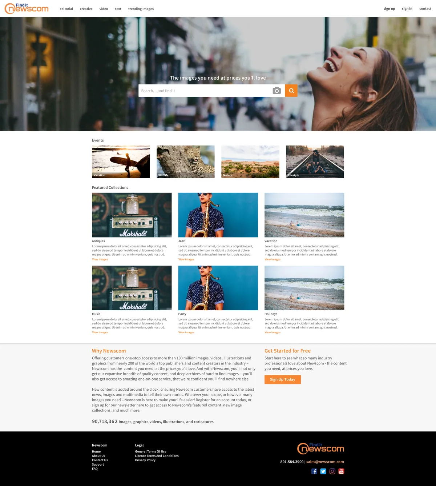
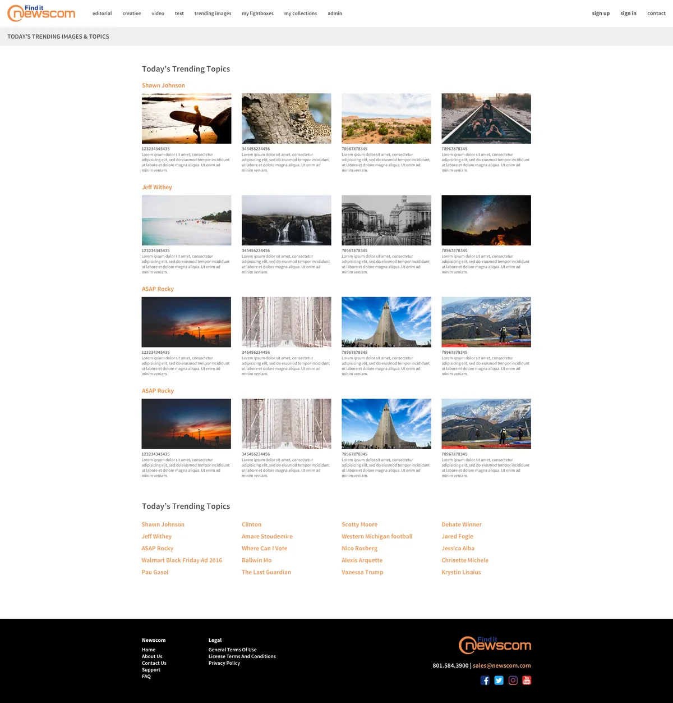
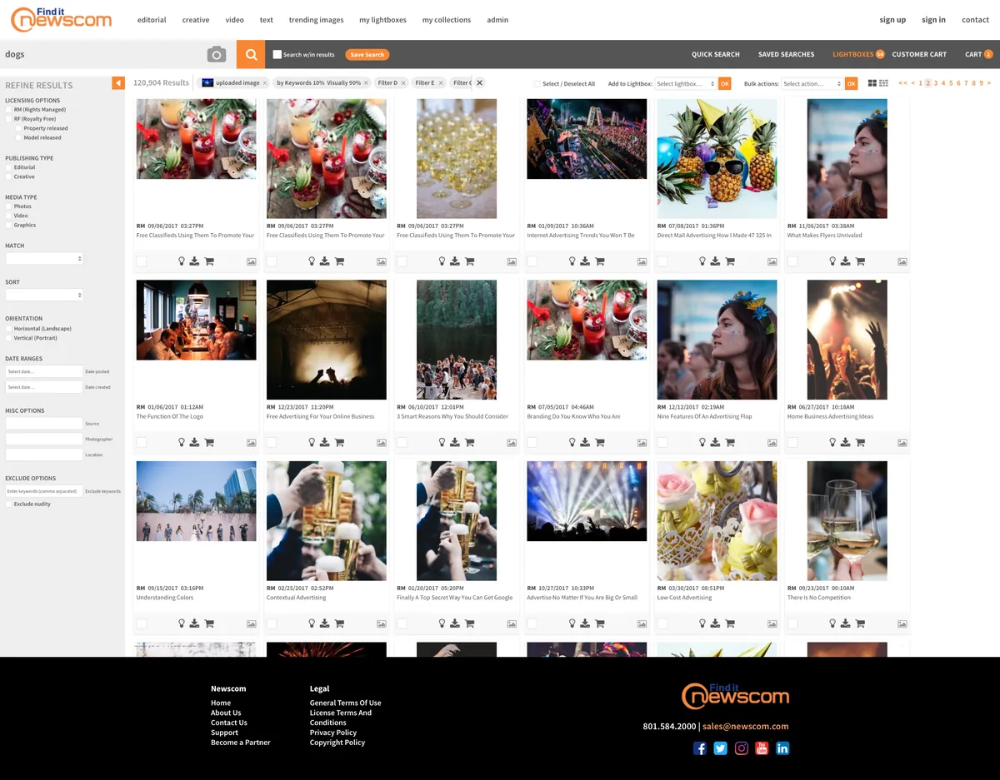
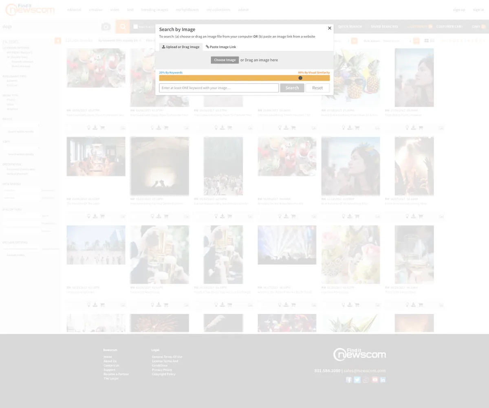
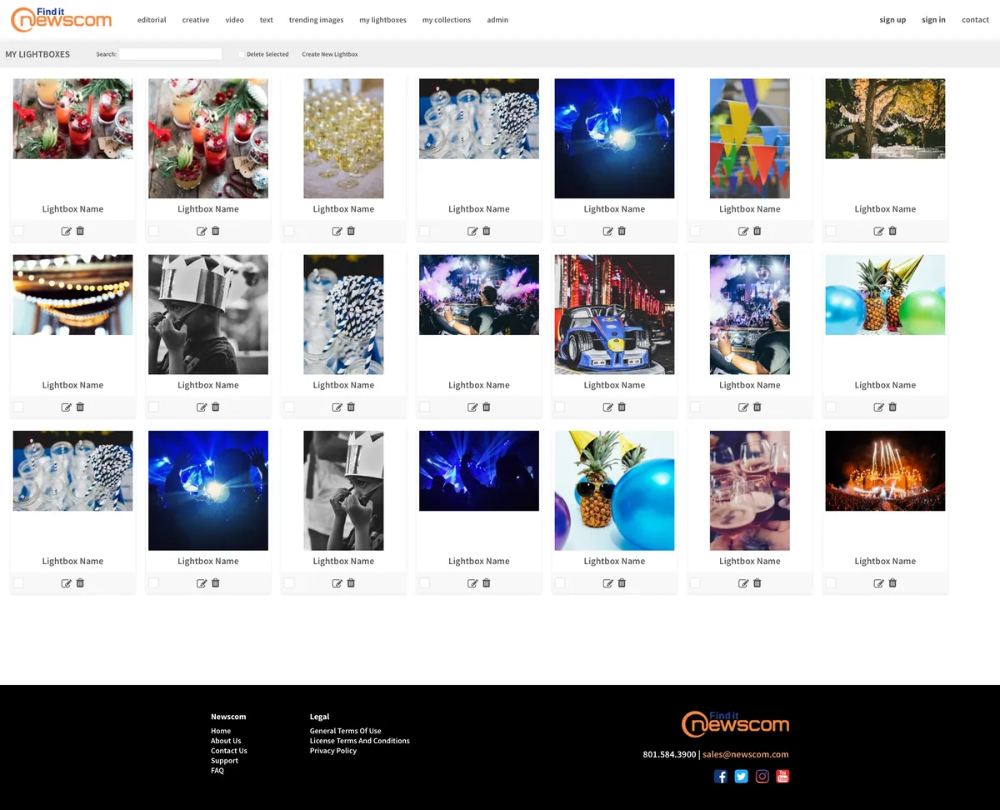
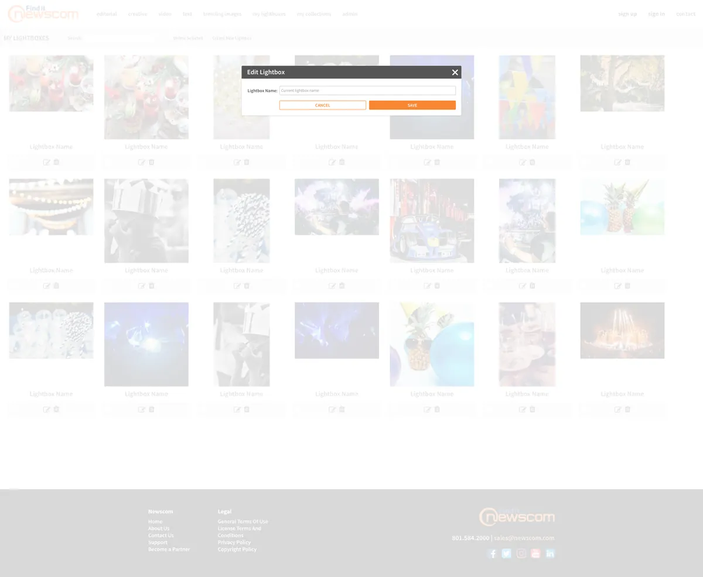
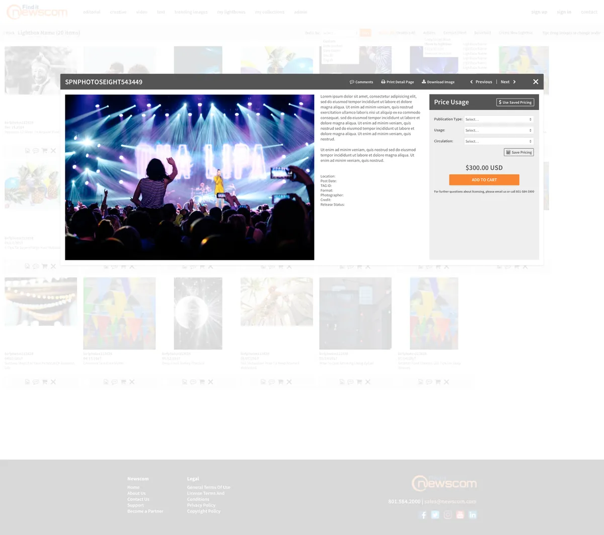
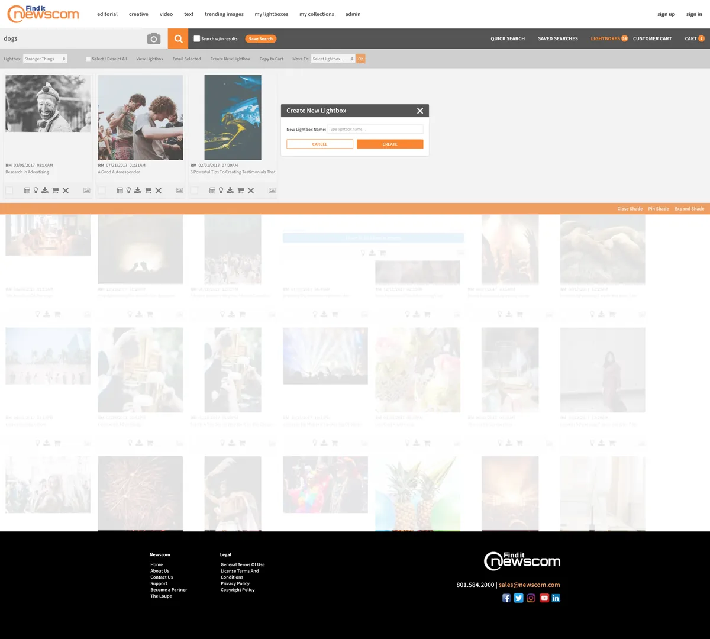

Home / Previous projects / 07 of 12
Newscom.com | Desktop Redesign
Click any image to open it at full size.
Desktop
















Home / Previous projects / 07 of 12
Click any image to open it at full size.







